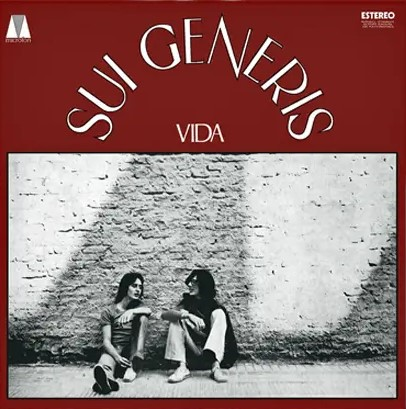

Somos "Tu Generis", un sitio creado para dar a conocer a las generaciones de hoy en
día la talentosa e histórica banda del rock nacional,
Sui
Generis.
Para eso proveemos información, muestras y en caso de interés, poder adquirir sus discos mediante
nuestro contacto.
¿Qué fue sui generis?
Sui Generis fue una banda argentina de Rock formada principálmente por
Charly Garcia (teclados, guitarra acústica, voz y composiciones) y Nito Mestre (flauta, guitarra acústica y voz),
considerada como una de las más importantes de los orígenes del rock latinoamericano.
La banda surgió en 1968 de la fusión de dos grupos de rock colegiales. Si bien a lo largo de su carrera
la banda contó con otros miembros y adoptó la forma de sexteto, cuarteto y dúo,
en diversos momentos, fue el dúo García/Mestre el que quedó asociado con el
nombre, y al que debieron su enorme fama posterior.
Otros miembros estables de Sui Generis fueron: Carlos Piegari; Beto Rodríguez; Juan Bellia; Alejando
Correa; Rolando Fortich; Francisco Prati; Juan Rodriguez y Rinaldo Rafanelli.
Álbums



Historia
Censura:
En la historiografía del rock argentino es un lugar común hablar de la censura que
sufrió el álbum "Pequeñas anécdotas sobre las instituciones", a veces refiriéndola a alguna repartición
estatal.
Dicha censura no sucedió como tal. Lo que sucedió es que Argentina había entrado, luego de la muerte del
presidente Juan D. Perón el 1 de julio de 1974, en una espiral de violencia política.
Ya bajo
la presidencia de María Estela Martínez de Perón,
el poder real quedó en manos de josé López Rega, quién a su vez dio vía libre para que actuara la
organización terrorista parapolicial que él dirigía, la conocida como “Triple A”,
financiada por la CIA y la logia italiana Propaganda Due, que lanzó una campaña de persecución y
exterminio de militantes, artistas e intelectuales señalados como “zurdos”.
Desde ese momento los asesinatos fueron incesantes y crecientes. indicando así que ya para ese momento
había comenzado a funcionar la Operacion Cóndor, que coordinaba las operaciones terroristas con Estados
Unidos y los demás países sudamericanos.
En ese momento, Charly García, e había comprometido políticamente con las ideas del Partido Comunista
Revolucionario que había adoptado una posición maoísta, que se notaría en sus temas, y en particular en
los temas del nuevo álbum que la banda estaba preparando en 1974
Adiós Sui Generis:
El estrés generado por las frecuentes giras por el interior, sumado a la complicada
situación
sociopolítica que se vivía en Argentina y los problemas de censura que afectaron al álbum Pequeñas
Anecdotas Sobre las Instituciones, fueron algunas de las causas que llevaron a la disolución del dúo en
1975.
Para este álbum, Sui Generis se transforma en un cuarteto eléctrico, ya que se sumanRinaldo
Rafanelli en el bajo y Juan Rodriguez en la batería, Este profundo cambio -impulsado por García-
desconcertó al público y frenó un poco el éxito comercial del grupo.
Su cuarta entrega, un álbum enteramente instrumental (razón por la cual Mestre perdió interés) que se
iba a titular ”Há sido”, se encontraba en plena producción, pero nunca llegó a grabarse.
En este contexto, el 5 de septiembre de 1975, Sui Generis cerró su carrera con un concierto 57 en el
estadio Luna Park, con capacidad para 9290 personas. Sin embargo, las entradas se agotaron rápidamente y
se tuvo que programar una segunda función. Finalmente se vendieron 25 600 entradas en total, una cifra
que sorprendió hasta al mismo grupo.
En ese concierto se grabó el material incluido en los álbumes Adiós Sui Géneris, parte I y parte
II.Diecinueve años más tarde, en 1994, se publicó Adiós Sui Géneris volumen III, con temas descartados
en la edición original.